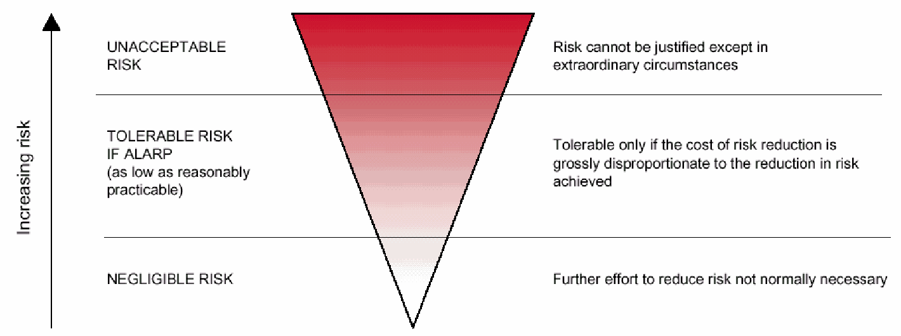
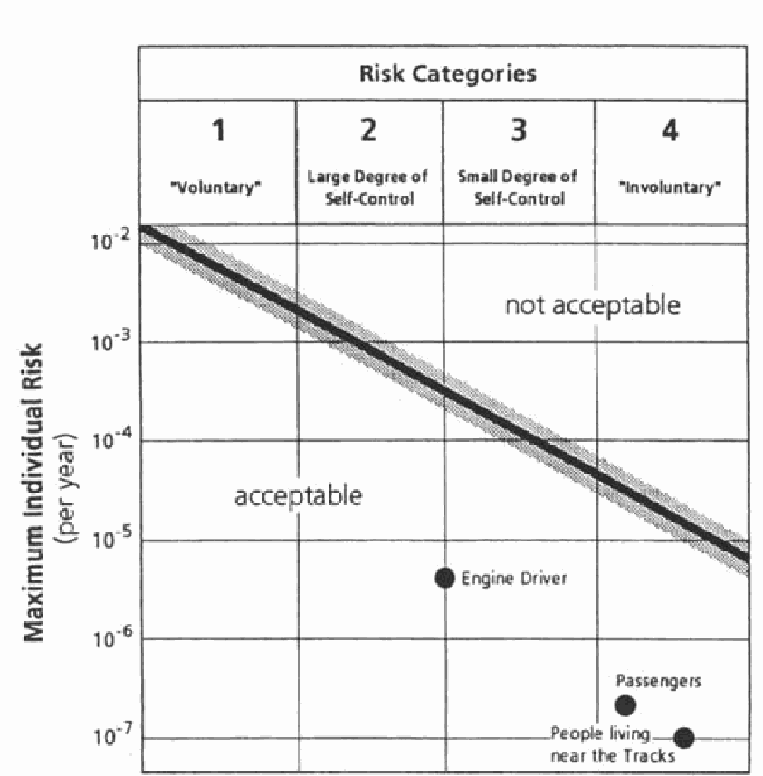
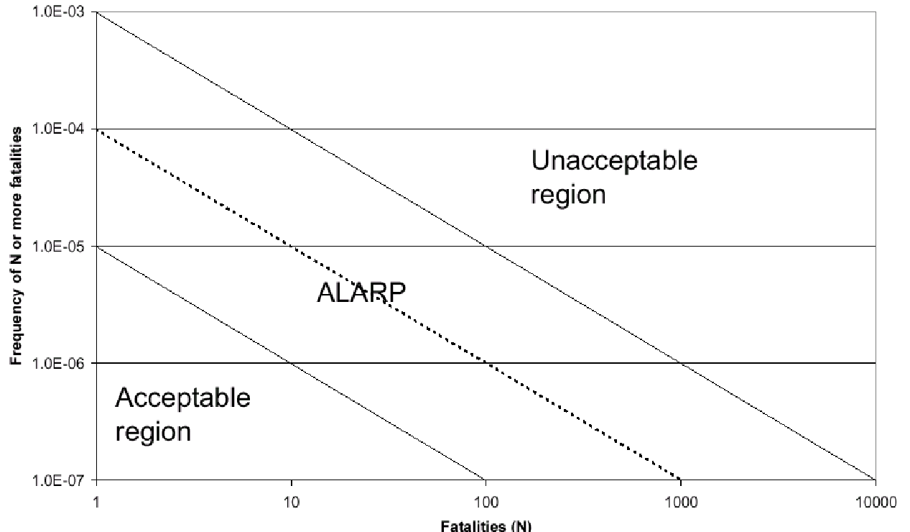
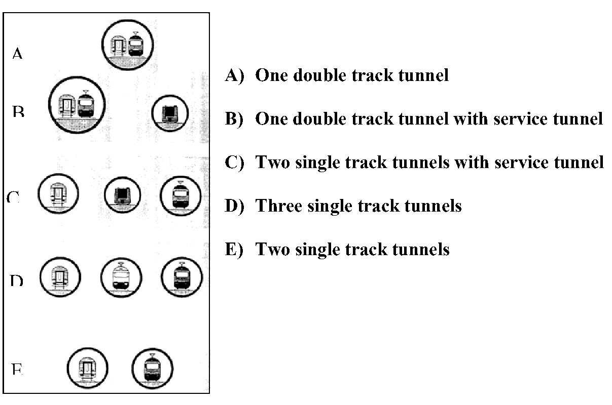

Risk Acceptance Criteria#
Background Documents on Risk Assessment in Engineering
Document #3
JCSS — Joint Committee of Structural Safety
Date: November 2008
JCSS author: Dimitri Diamantidis, University of Applied Sciences, Regensburg
Note
Source catalogue status: in review.
1. General#
The concept of risk acceptance criteria is well established in many industrial sectors. Comparative risk thresholds are established which allow a responsible organisation (or regulator) to identify activities which impose an unacceptable level of risk on the participating individuals or society as a whole.
Risk acceptance can be defined by two different methods: implicitly or explicitly. Implicit criteria often involve safety equivalence with other industrial sectors (e.g. stating that a certain activity must impose risk levels at most equivalent to those imposed by another similar activity). In the past, this approach was very common because some industrial sectors (for example nuclear and offshore) developed quantitative risk criteria well before others, and thus also constituted a basis for comparison. While this methodology has been surpassed by more refined techniques, it is still used occasionally today.
Explicit criteria are now applied in many industrial sectors, as they tend to provide either a quantitative decision tool to the regulator or a comparable requirement for the industry when dealing with the certification / approval of a particular structure or system. In particular the following criteria can be identified and are analytically described in the following paragraphs:
Human Safety approach: numerous statistics about human fatality risk exist in various countries. They give guidance to set the risk of death. Two types of risk are thereby considered: a) individual risk and b) societal risk.
a) Individual risk criteria: no individual (or group of individuals) involved in a particular activity can be exposed to an “unacceptable” risk. If an individual (or group of individuals) is found to be exposed to excessive risk, safety measures are adopted regardless to the cost-benefit effectiveness.
b) Societal risk criteria: a certain activity must not produce high frequency occurrences of large-scale accidents (i.e. with particularly severe consequences). In other words, the “unacceptable” level of risk varies for different accident sizes. This principle tries to capture a supposed socio-political aversion to large accidents and provides a regulatory basis (i.e. enforced investments in safety) in situations where the two other criteria do not call for intervention.
Safety Cost-Benefit approach: the possible investments in safety measures are analysed in terms of the expected benefits (typically the prevention of a statistical fatality or serviceability failure). Only solutions with benefits greater than costs are selected. Priority is then given to solutions having the greater “net value”. This approach is particularly suited to conditions related to serviceability failure, but societal inconvenience needs to be quantified. The procedure is analytically described in this contribution.
2. Human Safety#
Acceptable risk levels cannot be defined in an absolute and strict sense. As mentioned above, each individual has their own perception of acceptable risk which, when expressed in decision theory terms, represents their own “preferences”.
In order to define what is meant by “acceptable risk levels”, a framework for risk acceptability is adopted as shown in Figure 1 (based on HSE 1999). It is well known that some risks are so high that they are unacceptable. Therefore risks should be reduced to a level that is “as low as reasonably practicable” (ALARP). In principle, there is also a level of risk that is negligible and needs no further risk reduction effort.

In order to define the criteria in Figure 1 in more tangible terms many different aspects need to be taken into account, and it is important to incorporate them into a consistent framework.
An important aspect is the degree of voluntariness with which the decision is taken and the risk is endured. In the personal sphere these decisions are quickly made, knowing that they can be immediately amended if the risks exceed the expectation. In the case of societal decisions involving risk, however, the individual can still make their appraisal in accordance with their own set of standards, but their influence on the final outcome is democratically limited. This implies a sense of involuntariness and compels them to adopt a critical attitude towards risks imposed by societal decisions.
These observations result in the conclusion that the decision to accept risk is not based on the absolute notion of one acceptable risk level but has some flexibility as the judgement depends on the cost/benefit ratio and the degree of voluntariness.
It is always possible to reduce the risk of a hazardous facility. But the incremental costs needed for reducing risk by an additional unit increase as the risk becomes smaller. With resources always being limited, money spent at one place will be lacking at another. Hence, the limited funds for safety measures must be used in such a way that a maximum level of safety is achieved. The optimal allocation of funds is a classical optimisation problem. In principle, it can be solved by the so-called marginal-cost-criterion, which would mean minimising the expected number of fatalities as measured by the collective risk R.
Individual Risk#
The annual probability of being harmed describes the risk to an individual due to a hazardous situation. This probability is called the individual risk r. With respect to fatality risks, the individual risk r is the annual probability of being killed. The individual risk can also be defined as the frequency at which an individual may be expected to sustain a given level of harm from the realisation of specified hazards.
Table 1 gives an overview of personal risks in developed countries. In column (B) the risk is presented as the probability per unit time of being killed when actually doing the activity mentioned in column (A). Such a frequency is called a Fatal Accident Rate (FAR). Following its original publication the FAR is expressed as the number of fatalities per 100 million hours (=11500 ≈ 10000 years). Often the FAR is computed for a given activity during \(10^8\) hours of exposure, roughly equivalent to the total working hours of 1000 individuals in a 40-year professional life. This is a useful measure in comparisons of the risk of various professions, but it is often misleading as in many cases we are only exposed to the considered activity for a small fraction of the time. The estimated part of time spent on the activity is mentioned in column (C). In column (D) the frequency is presented as the probability of fatality per time unit averaged out over the hours doing and not doing the activity. It is expressed as an annual probability. The link between the two risk measures, of course, is the proportion of time spent in the activity. Formally, the relation is given by:
In general it is proposed to look at the pattern of preferences revealed in accident statistics in order to derive acceptability criteria related to the individual risk. The fact that actual personal risk levels associated with various activities demonstrate statistical stability over the years and are approximately equal for most Western countries indicates a consistent pattern of preferences. The probability of losing one’s life in normal daily activities such as driving a car or working in a factory appears to be one or two orders of magnitude lower than the overall probability of dying. Only a purely voluntary activity such as mountaineering entails a higher risk.
This observation of public tolerance of greater risks from voluntary compared to involuntary activities, taking into account the direct benefit of the activity, may be used as a basis for decisions with regard to the personally acceptable probability of failure in the following way:
where \(P_{d\mid fi}\) denotes the probability of being killed in the event of an accident. In this expression the policy factor \(\beta_i\) varies with the degree of voluntariness with which an activity i is undertaken and with the benefit perceived. It ranges from 100, in the case of complete freedom of choice like mountaineering, to 0.01 in the case of an imposed risk without any perceived direct benefit (see Figure 2).
A proposal for selection of the value of the policy factor \(\beta_i\) as a function of voluntariness and benefit is given in Table 2.
Table 1: Fatal Accident Rates
(A) Cause of Death |
(B) During activity [/\(10^8\) hrs] |
(C) Proportion of time (average) |
(D) Annual probability [1/year] |
|---|---|---|---|
Rock climbing |
4000 |
0.005 |
1/500 |
Motorcycle accidents |
300 |
0.01 |
1/3000 |
Skiing |
130 |
0.01 |
1/8000 |
Workers in high rise building industry |
70 |
0.2 |
1/700 |
Deep sea fishing |
50 |
0.2 |
1/1000 |
Workers on offshore oil and gas rigs |
20 |
0.2 |
1/2500 |
Disease average for 40-44 age group |
17 |
1 |
1/600 |
Travel by air |
15 |
0.01 |
1/70000 |
Travel by car |
15 |
0.05 |
1/13000 |
Disease average for 30-40 age group |
8 |
1 |
1/1200 |
Coal Mining |
8 |
0.2 |
1/6000 |
Travel by train |
5 |
0.05 |
1/40000 |
Construction industry |
5 |
0.2 |
1/10000 |
Agriculture (employees) |
4 |
0.2 |
1/12000 |
Accidents in the home |
1.5 |
0.8 |
1/9000 |
Travel by local bus |
1 |
0.05 |
1/200000 |
Chemical industry |
1 |
0.2 |
1/50000 |
California earthquake |
0.2 |
1 |
1/50000 |
Note: Accident Rates are expressed as:
in column (B): the number of fatalities per 100 million hours spent on an activity
in column (D): the number of fatalities per year for people involved in the activity
Table 2. The value of the policy factor \(\beta_i\) as a function of voluntariness and benefit
\(\beta_i\) |
Voluntariness |
Direct benefit |
Example |
|---|---|---|---|
100 |
Completely voluntary |
Direct benefit |
Mountaineering |
10 |
Voluntary |
Direct benefit |
Motorbike riding |
1.0 |
Neutral |
Direct benefit |
Car driving |
0.1 |
Involuntary |
Some benefit |
Working in a factory |
0.01 |
Involuntary |
No benefit |
Working in an LNG-plant |
It should be noted that a \(\beta_i\) -value has to be chosen for each threatened group, and that this differs in its relation to the activity. For instance, the engine driver, the passengers and the people living near the tracks of a rail route each have a specific relation to transportation of hazardous materials and consequently different visions on the acceptability of a certain level of risk (compare Figure 2).

Societal Risk#
To society as a whole or to a company or institution responsible for a specific activity, the total damage due to a hazard is of prime interest. To comprehend this point of view the notion of collective risk R (fatalities/year) is introduced.
where n is the number of all independent and mutually exclusive accident scenarios i, \(p_i\) is the probability of occurrence (per year) of scenario i, and \(C_i\) are the consequences of scenario i. The consequences may for instance be measured in fatalities per year, monetary units or emission of a given substance. The collective risk R equals the sum of all individual risks r in a given system. Both individual and collective risk are relevant aspects of safety though they are interrelated with each other.
With respect to fatality risks the collective risk R corresponds to the annual expected number of fatalities. It depends on the probability as well as the size of the consequences of harmful events. For very large systems it is reflected in the results of annual accident statistics.
In most practical studies the societal risk of an installation is given in the form of a numerical F-N-curve. An F-N-curve (N represents the number of fatalities, F the frequency of accidents with more than N fatalities) shows the relationship between the annual frequency F of accidents with N or more fatalities. Upper and lower bound curves are recommended based on gained experience with similar projects/activities and the ALARP (As Low As Reasonably Practical) acceptability criterion is obtained as the domain between the aforementioned limits (Melchers, 1990). The upper limit represents the risk that can be tolerated in any circumstances while below the lower limit the risk is of no practical interest. Such acceptability curves have been developed for various industrial fields including the chemical and the transportation industry. The ALARP method has been discussed by Melchers (1990) and is illustrated here in Figure 3.

The recommendations of Figure 3 can be represented in a so-called risk-matrix. For that purpose qualitative hazard probability levels suitable for use within road safety applications have been defined as shown in Table 3 and hazard severity levels of accidental consequences in Table 4 .
Table 3. Hazard probability levels
Class |
Frequency |
Range (Events per year) |
|---|---|---|
A |
Frequent |
>10 |
B |
Occasional |
1-10 |
C |
Remote |
0.1-1 |
D |
Improbable |
0.01-0.1 |
E |
Incredible |
0.001-0.01 |
Table 4: Hazard severity levels
Class |
Severity category |
Human Losses |
|---|---|---|
1 |
Insignificant |
- |
2 |
Marginal |
injuries only |
3 |
Critical |
1 |
4 |
Severe |
10 |
5 |
Catastrophic |
100 |
The hazard probability levels and the hazard severity levels can be combined to generate a risk classification matrix. The principle of the risk classification matrix is shown in Table 5. The authority is usually responsible for defining the tolerability of the risk combinations contained within the risk classification matrix. The procedure is very similar to the acceptability curve illustrated in Figure 3.
Table 5: Risk Acceptability Matrix
1 |
2 |
3 |
4 |
5 |
|
|---|---|---|---|---|---|
A |
ALARP |
NAL |
NAL |
NAL |
NAL |
B |
ALARP |
ALARP |
NAL |
NAL |
NAL |
C |
AL |
ALARP |
ALARP |
NAL |
NAL |
D |
AL |
AL |
ALARP |
ALARP |
NAL |
E |
AL |
AL |
AL |
ALARP |
ALARP |
AL: Acceptable Level
ALARP: As Low As Reasonably Practicable (Level)
NAL: Not Acceptable Level
Based on an assessment of both hazard probability and severity level the risk acceptability can be assessed. Such a procedure has been often applied to assess the risk in the transportation industry and is especially useful in cases, in which limited accidental data are available.
3. Safety versus Cost-Benefit based on the Life Quality Index (LQI)#
The decision to accept risk is not based on the absolute notion of one acceptable risk level but has some flexibility as the judgement depends on the cost/benefit ratio. It is always possible to reduce the risk of a hazardous facility. But the incremental costs needed for reducing risk by an additional unit increase as the risk becomes smaller. With resources always being limited, money spent at one place will be lacking at another. Hence, the limited funds for safety measures must be used in such a way that a maximum level of safety is achieved. The optimal allocation of funds is a classical optimisation problem. The optimisation problem can be solved using the Life Quality Index (LQI) approach (see JCSS Background Documents 4 and 5). The strategy is based on a social indicator that describes the quality of life as a function of the gross domestic product, life expectation, and the life working time. The LQI (Nathwani et al, 1997) is a compound societal indicator, which is defined as a monotonously increasing function of two societal indicators: the gross domestic product per person per year, g, and the life expectancy at birth, e.
The exponent w is the proportion of life spent in economic activity. By applying the safety vs. cost-benefit approach risk acceptability criteria are indirectly applied by evaluating each investment into safety. The LQI approach is analytically described in a separate chapter of this document. Optimal and acceptable values for structural safety are provided in the probabilistic model code PMC (JCSS, 2008).
4. Example applications: tunnel safety studies (Diamantidis, 2008)#
4.1 Long Railway Tunnel in Central Europe#
Several long railway tunnels over 20 kilometers are currently in the construction or in the design phase in Europe. Safety studies for railway tunnels can be found in various literature sources (see Diamantidis, et. al., 2000). An important design aspect for those tunnels is the choice of the tunnel system (tunnel configuration). Possible tunnel systems are shown in Figure 3.
The final choice of the system depends on several parameters such as construction costs, construction time, operation capacity, maintenance and of course safety. The state-of-the art represented by the Channel Tunnel is the system C) i.e. two single track tunnels with a service tunnel. However due to economy reasons and recent developments in safety systems the question of constructing a service tunnel for the new long railway tunnels crossing the Alps has been raised.

Several risk analyses have been performed based on an event tree approach and on available accident statistics calibrated to account for future tendencies. The analyses have been carried out for the following typical tunnel characteristics:
tunnel length of 50 kilometers,
traffic volume of max 300 trains per day,
mixed traffic (up to 80% goods trains, 20% passenger trains),
transportation of dangerous goods,
implementation of modern prevention, mitigation, self rescue and rescue by third measures
Special attention has been paid to the influence of the service tunnel which leads to a risk reduction of the order of 25% to 30%. The associated risk benefit has been quantified to be less than a fatality per year. However the annual costs related to construction and maintenance of the service tunnel are of the order of 15 Million US$. Consequently the service tunnel is an expensive safety measure which has not been justified by the performed cost benefit analyses. In fact current long railway tunnel projects in Central Europe have been designed as two single track tunnels with frequent interconnections (every 250 to 300 meters) but without service tunnel. In case of an accident in one tube the interconnections and the other tube serve for self-rescue and rescue by third purposes.
4.2 Long Highway Tunnel in Southern Europe#
The under feasibility study tunnel consists of two tubes and has a length of approximately 6000 meters. The projected traffic volume for the year 2030 corresponds to approximately 30000 vehicles per day including 25 % heavy traffic for the worst scenario of no tolling. Two possible alternative designs for the emergency lane in each tube have been considered:
a) an emergency lane with a width of 0.5m and lay-bys every 1000 meters;
b) an emergency lane with a width of 2.5m.
Solution b) is associated to a lower risk compared to solution a). The comparison of both solutions based on modern risk analysis methodologies is especially reviewed herein by investigating both options. The following data are of importance for the performed analyses:
Design lifetime: is considered as 100 years compatible to code requirements.
Construction Costs: the costs of solution a) have been estimated in the preliminary feasibility study as 200 Million Euros; the additional costs due to the wider emergency lane in case of solution b) correspond to 30% - 40% of the costs of solution a).
Maintenance costs: the average annual maintenance costs are of the order of 0.1% to 0.5 % of the total investment costs for both solutions.
The following two basic accidental scenarios have been taken into account. The associated annual frequency has been obtained based on appropriate accident data available in Europe:
Fire in vehicle with fatalities: \(1\) per \(10^8\) vehicles × (tunnel) km
Fire in lorry with severe consequences: \(0.3\) per \(10^8\) lorries × (tunnel) km
The first fire scenario is associated based on the classification of Table 2 to severity level 3 (critical) the second fire scenario to severity level 4 (severe). The annual accidental frequencies associated to the two hazard scenarios are presented in Table 6. The influence of the wider emergency lane on the accidental frequency has been estimated based on literature information.
The results show that both alternatives are associated to the ALARP (As Low As Reasonably Practicable) range based on the acceptability criteria of Table 3 and are consequently acceptable.
Table 6: Annual Accidental Frequency
Hazard Scenario |
Solution a) |
Solution b) |
|---|---|---|
Vehicle fire frequency |
0.49 (remote) |
0.37 (remote) |
Lorry fire frequency |
0.051 (improbable) |
0.038 (improbable) |
Additional cost benefit analyses have been performed with the following considerations:
a relatively low annual net discount rate (1% - 2%);
a relative reduction related to human risk in case of solution b) based on available data and expert judgement in the range between 20% and 30%;
a reduction related to economic risk corresponds approximately to 8 Euros per 1000 vehicle x (tunnel) km based on statistical damage data.
The cost benefit analyses have manifested that the construction of an emergency lane of 2.5 meters in the subject tunnels cannot be justified due to the associated high costs compared to the financial benefits associated to the risk reduction. It is fact, that emergency lanes of such width are rarely considered in similar tunnel projects due to the associated high costs.
References#
Diamantidis, D., F. Zuccarelli and A. Westhäuser, 2000 „Safety of long railway tunnels”, Reliability Engineering and System Safety 67, pp. 135-145.
Diamantidis, D., 2005 „Risk Analysis versus Risk Acceptability in Major European Tunnel Projects”, Proceedings 1st Asia Pacific Conference on Risk Management and Safety, Hong Kong.
Health and´Safety Executive (HSE), 1999, Reducing Risks, Protecting People, London.
Joint Committee on Structural Safety (JCSS), 2008, Probabilistic Model Code.
Melchers, R.E., 2000 „On the ALARP approach to risk management”, Reliability Engineering and System Safety, 71, pp. 201-208.
Nathwani J.S., Lind N.C. and Pandley, M.D., 1997, Affordable Safety by Choice: The Life Quality Method, Institute for Risk Research, University of Waterloo, Canada.
Source and citation#
Suggested citation: Diamantidis, D. (2008). Risk Acceptance Criteria. Background Documents on Risk Assessment in Engineering, document #3. Joint Committee on Structural Safety, November 2008.